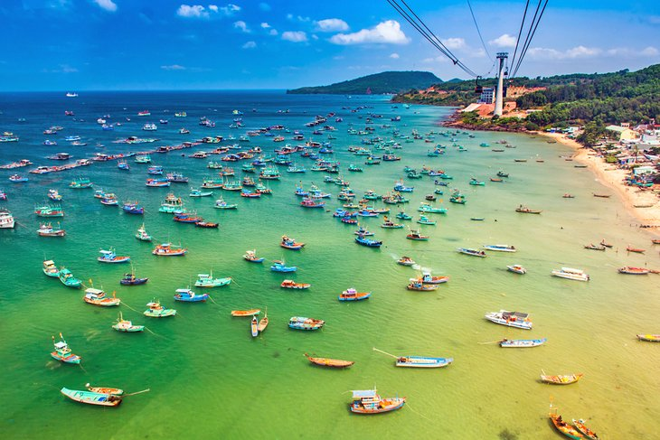
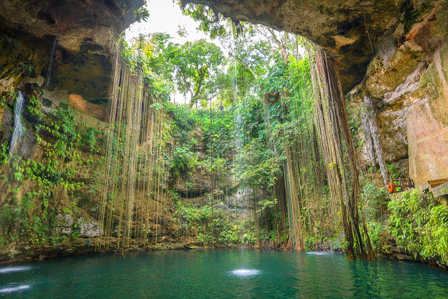

Though traveling can offer incredible personal growth and fulfillment, the associated expenses can be a barrier for many.
However, traveling on a budget is becoming more popular than ever, especially in the wake of the COVID-19 pandemic.
By employing some foresight and ingenuity, one can discover novel locales and immerse oneself in diverse customs without depleting one's finances.
This article will feature 5 budget-friendly destinations that present one-of-a-kind experiences for thrifty globetrotters.
#1: Thailand

Due to its affordability, stunning scenery and friendly locals, Thailand is a popular destination for budget travelers. From the peaceful beaches of Phuket to the bustling streets of Bangkok, Thailand has something to offer for everyone. Street food vendors offer delectable and affordable local cuisine, with savory meals priced as low as $1.
Some budget-friendly activities in Thailand include visiting local markets, exploring ancient temples, and taking a cooking class. Lodging possibilities span from economical hostels to guesthouses and budget-friendly hotels, with rates starting at just $5 nightly.
#2: Vietnam

In recent years, Vietnam has become a sought-after budget-friendly destination for travelers. Despite its increasing popularity, Vietnam continues to offer an affordable option for travelers seeking to discover the allure and variety of Southeast Asia without overspending.
Vietnam's cultural and historical richness is one of its most enticing features. From ancient dynasties to French colonization, Vietnam has a fascinating past that is reflected in its architecture, cuisine, and customs. Visitors can explore the country's history by visiting historical sites such as the ancient city of Hoi An or the Cu Chi Tunnels, which were used during the Vietnam War. In addition to its history, Vietnam is also known for its stunning natural landscapes.
A must-visit destination for travelers, Ha Long Bay is a UNESCO World Heritage site located in northeast Vietnam's Quang Ninh Province, within the Gulf of Tonkin. Visitors are also drawn to the Mekong Delta, famous for its vibrant river markets and verdant rice paddies. For budget-conscious travelers, Vietnam offers a plethora of affordable activities. Sampling the mouthwatering street food is one of the best ways to immerse yourself in Vietnamese culture. From pho to banh mi, Vietnamese cuisine is both delicious and affordable, with street food stalls serving up tasty dishes for as little as $1.
Accommodation options, including hostels and budget hotels, start from $5 per night and often offer private rooms in addition to dormitory-style lodging. Vietnam's affordable activities and lodging make it an attractive choice for travelers seeking to experience Southeast Asia without overspending.
#3: Indonesia
An archipelago of more than 17,000 Islands that spans two continents, the nation of Indonesia is a destination with unparalleled diversity. Indonesia boasts breathtaking beaches that are renowned worldwide, including those found in Bali, making it a must-visit destination for budget-conscious travelers seeking seaside delights.
But Indonesia is much more than just beaches. It has a rich cultural heritage reflected in its numerous temples, such as the Borobudur Temple in Central Java. For adventurous travelers, hiking up volcanoes such as Mount Bromo or Mount Rinjani is a must-do activity that won't break the bank.
The food culture is another notable feature, as there are many delectable and reasonably priced dishes to savor. From nasi goreng to sate, Indonesian cuisine is flavorful and varied, reflecting the country's diverse cultural influences.
Available across Indonesia are many budget-friendly hostels and guesthouses that offer rates as low as $5 per night. Also available in the region are several backpacker-friendly towns, such as Ubud in Bali and Yogyakarta in Java, that provide a range of economical lodging options along with affordable eateries and activities.
All in all, Indonesia provides an exceptional combination of culture, nature, and adventure at an affordable price, making it an ideal destination for budget-conscious travelers seeking a variety of experiences in Southeast Asia.
#4: Portugal
Portugal is a hidden gem that many people overlook when it comes to budget travel destinations. Despite its reputation as a high-end tourist hotspot, Portugal is actually an affordable country to explore. It caters to the preferences of all types of travelers, owing to its captivating beaches, cities rich in history, and delectable cuisine.
A city pulsating with life, Lisbon - the capital of Portugal - is a cultural epicenter, characterized by its lively nightlife, vivid streets, and iconic landmarks. From the iconic yellow trams that navigate the hilly streets to the delicious local food and wine, Lisbon is a destination that should not be missed.
Portugal isn't just about its capital city though. In the southern part of Portugal is the Algarve, home to Europe's most gorgeous beaches, distinguished by their clear waters and sandy shores. From lounging on the beach to hiking along the coastal trails, the Algarve offers a range of activities for visitors. Portugal's abundance of economical experiences is one of its finest attributes.
Visiting the Mercado de Ribeira, a neighborhood market in Lisbon, is an excellent and economical way to delve into the city's culture, as you can enjoy local cuisine and purchase souvenirs without exceeding your budget.
For those intrigued by history, Portugal is the abode of numerous UNESCO World Heritage sites, including the Belem Tower in Lisbon and the historic center of Porto.
Accommodation options in Portugal are also very affordable. From budget hostels to guesthouses and budget hotels, there are plenty of options to suit every traveler's budget. $10 will get you a bed in a hostel dorm, while budget hotels can cost as little as $50-$60 per night.
If Europe is on your plans as a budget-conscious traveler, Portugal is a destination that should not be overlooked. It is ideal for those who want to experience all that Europe has to offer without breaking the bank.
#5: Mexico

Rich in natural wonders and cultural heritage, Mexico is a vibrant and diverse country that is favored by many budget travelers. This is due to various reasons such as affordability, rich culture, and stunning natural beauty. For budget-conscious tourists, Mexico offers an array of activities to suit all tastes.
It's lively culture is highlighted by its vibrant streets, historical ruins, and bustling markets, making it one of the country's main draws for visitors.
One of the most unique natural attractions in Mexico is its cenotes, which are natural sinkholes that are formed when limestone bedrock collapses to reveal underground water reservoirs. Prevalent in the Yucatan Peninsula, Cenotes are an essential destination for tourists seeking to experience Mexico's natural beauty.
Tulum, a coastal town, is renowned for its striking Mayan ruins and picturesque coastal vistas while Cancun, another coastal town located on the Caribbean coast, is a favored spot for beach enthusiasts due to its white sand beaches and waters.
Tourists can also visit ancient Mayan and Aztec ruins that are spread throughout the country.
Another great way to experience Mexico's local culture is by exploring the local markets and trying out the local cuisine which is a blend of traditional and modern flavors.
One more reason why Mexico is popular among budget travelers is the availability of affordable accommodation options. Accommodation options in Mexico include budget-friendly hostels, guesthouses, and hotels with rates beginning at approximately $10 per night. All these provide a comfortable and affordable stay for travelers who are looking to save money on their vacation.
In summary, Mexico is an ideal place for budget-conscious travelers with its affordable accommodation options, fascinating culture, and breathtaking natural beauty. It is highly recommended for anyone seeking a budget-friendly vacation.